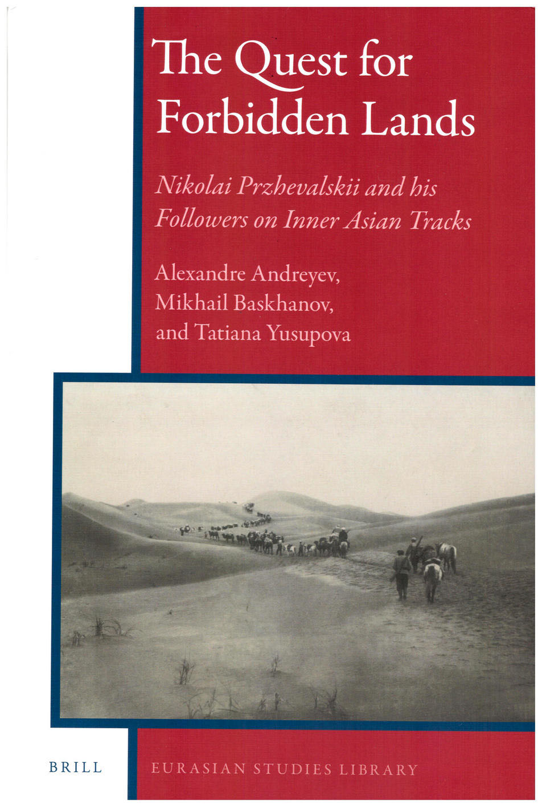

Дроны в погоне за картой
«Популярная механика» №8, 2019
Думаете, на карте Земли не осталось белых пятен? Как бы не так: их лишь осторожно прикрыли синими кляксами океанов. Стыдно, но топография Луны изучена лучше, чем большая часть поверхности нашей собственной планеты. Марс картографирован с разрешением до шести метров, и даже бурная Венера почти вся исследована со 100-метровой точностью. Между тем подобные карты составлены не более чем для 5–10% океанского дна — в основном это прибрежное мелководье и отдельные зоны, где проводятся активные геологические изыскания.
В поисках запретных земель в Центральной Азии
Троицкий вариант — Наука» №18(287), 10 сентября 2019 года

Тема для нашей истории и географии не новая. Поиск дороги к неведомым, но желанным землям в Азии, будь то райское Беловодье или богатая драгоценными камнями Индия, веками толкал русских людей на восток. В XVII веке Московия направляла дипломатические миссии в Китай. В XVIII столетии в Санкт-Петербурге появились научные публикации о загадочном Тибете и Гималаях и об удивительном учении Будды.
Из мухи — слона
«Квантик» №2, 2019 и №3, 2019
В повести известного писателя Юрия Трифонова (1925–1981) «Долгое прощание» рассказывается, как герой проводит время в поезде: «Третьи сутки Ребров, лёжа на верхней полке, мучил себя — делал из мухи слона. На листке бумаги писал: муха — мура — кура — кора — корт — торт — торс...».